| HOME | ABOUT ME | BIODATA | EDUCATION | FAMILY | BESTIES | INTEREST | MEMORIES | CONTACT |
Honestly, travel is the best thing on Earth I could say. Because we can see the world in a different sight and that we will then be thankful with the Almighty. Alhamdulillah for everything ❤️ There are few places I have been since small.
I barely capture pictures here because I'm still small and I don't hold the camera so I do not know where all the pictures we got in my grandmother's village.
At this age alhamdulillah my father let me hold the camera so I get the chance to capture everything I want HAHAHA 😎
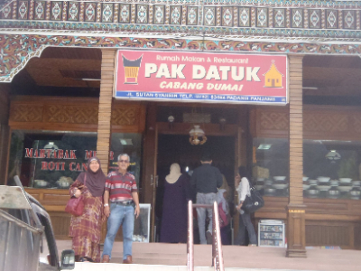 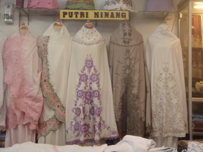 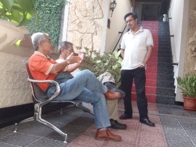My parents went for Umrah in 2012 and decided to brought me along because there was no one at home and scared that I might not be able to live alone so I just followed them to Umrah and learn how to do it. Alhamdulillah for the chance given ❤️
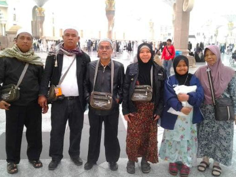 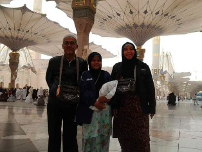 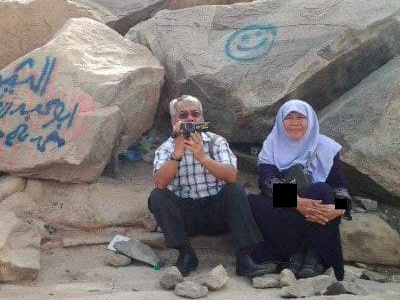In 2013, my aunt invited us to join them to Vietnam so we went there together by 3 families which is my aunt and her friends, and us together 😁
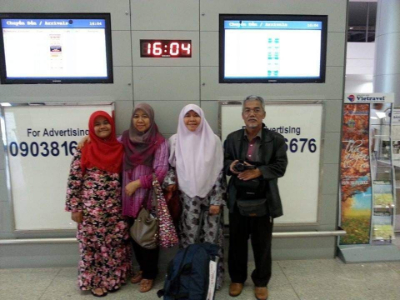 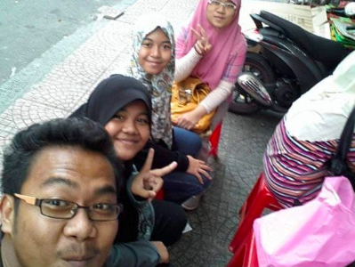Last one I had was in Egypt in 2017 because of my sister-in-law gave birth of my niece which is Nafisah. My brother in Mesir now is doing his Master.
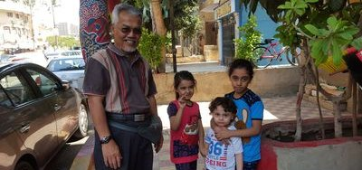 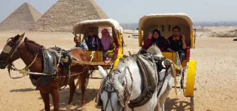 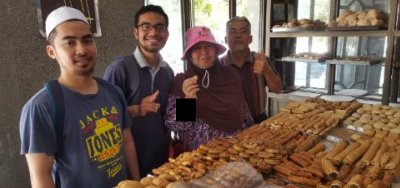I really love watching movies and the movie I suggest to watch is this Thai movie because it is soooo funny !! I share the thriller so that you can consider to watch it later hehe 😉 #donehasut 😝
For cartoon movie, I really like Coco movie because it is about family. To be honest, I love movies that relate with family because I think it's going to be a great story to watch and share hehe 😎 Here I share the trailer if you might want to watch it later 😝
I like to cook but I don't do it all the time because I usually cook whenever I feel like doing it. I like baking too because I just love the cake hahahahha so basically I cook because I want to eat 😝
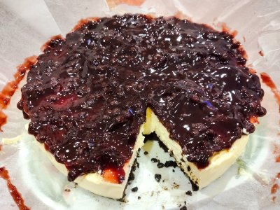 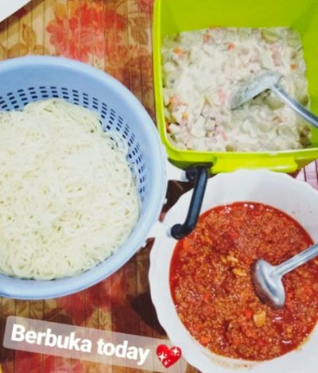 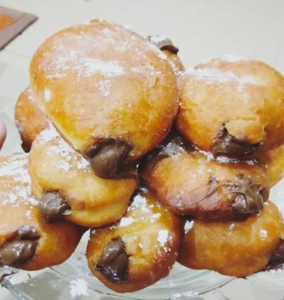